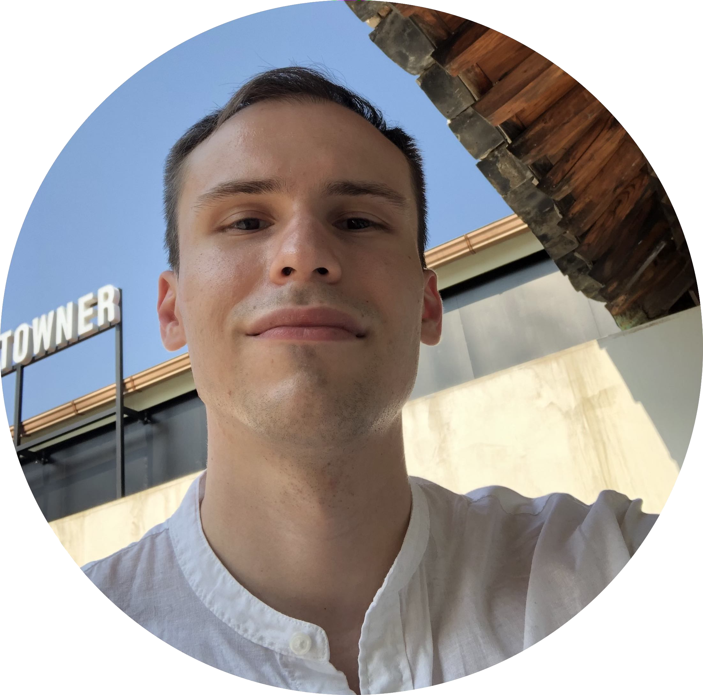

|  | Maikls TalessGobal MBA Graduate.Connector. On a long term path of becoming a Marketing Manager. People person. Thus interested in Web Development,Content Production, Coding, PPC Marketing, Data Analysis. |
| Feb 2020 - Present | Marketing Consultant @ Startup | DOHBIO |
| Oct 2019 - Jan 2020 | Marketing Research Intern | Exus |
| Feb 2019 - Jul 2019 | University Communicator | KNCDC 국립현대무용단 |
| Feb 2018 - Mar 2019 | International Student Ambassador | Barun ICT Research Center |
| Dec 2017 - Jan 2018 | Frelance Translator | Bareunmedia 바른미디어 |
| Sep 2017 - Aug 2019 | Global MBA| Dongguk University |
| Sep 2016 -Jul 2017 | Korean Language Year | Paichai University 배재대학교 |
| Sep 2010 -Jul 2015 | BBA | University of Latvia |
| Sep 2012 - Aug 2013 | BBA (Erasmus Study Exchange ) | Odisee |
Jan 2018 -Sep 2018
Tutoring unpriviledged kids English at 강복 청소년 수련관/Gangbook Youth Training Center.
Jan 2014 - Aug 2015
Assisting incoming exchange students, mainly from Asia(Taiwan, Korea, China) to assimilate into Riga's lifestyle.